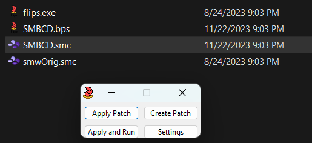

注意事項
このガイドではスーパーマリオワールドのモッドのインストールのしかた、及びMSU-1の利用方法を説明します。ここではマリオCDを参考に説明しますが、その他様々なスーパーファミコンのモッドでも同様に使えます。
MSU-1はマリオCDでCD音声などの本来スーパーファミコンでは難しい機能を使えるようにするもので、マリオCDを遊ぶためにはインストールが必須です。もしMSU-1がない、または正しくインストールされてない場合はマリオCDは起動しません。ガイド通りにインストールしたうえでマリオCDが起動しない場合はエミュレータのMSU-1の対応性を確認し、ファミコンCDのDiscordでサポートをしてもらってください。
【重要】 マリオCDのインストールにはスーパーマリオワールドの北米版が必要です。基本的に自分でゲームカードを買い、合法コピーすることをオススメします。その他入手方法は自分自身の責任で行ってください。
マリオCD、MSU-1のセットアップ
（最初のステップはマリオワールドのモッドのインストールのしかたとなります。すでにご存知の方はステップ５から読んでください。）
ステップ１： まずこのサイトからマリオCDをダウンロード%ししてください。ZIPファイルとしてダウンロードされます。
![[zipimage]](../graphics/MSU1Setup/zip.png)
ステップ２： ZIPファイルを開いてください。開ける方法がない場合、7-Zipなどのアーカイブ解凍ソフトをダウンロードしてください。
ステップ３： ZIPアーカイブを開くとき、BPSのパッチ、MSUファイルとPCMファイルが見られます。まずはBPSを準備してください。
![[bpsimage]](../graphics/MSU1Setup/bps.png)
ステップ４： マリオCDのBPSをFloating IPSまたはMarc Robledo's Onliner Patcherを使ってマリオワールドのROMにパッチしてください。
Floating IPSを使う

Marc's Online Patcherを使う
![[marcimage]](../graphics/MSU1Setup/marc.png)
ステップ５： パッチが完了したあと、使えるか確認してください。MSU-1が必要という画面が出た場合成功です！次に進んでください。
![[testingimage]](../graphics/MSU1Setup/testing.png)
ステップ６： 先ほどのMSUファイル、PCMファイルを準備し、マリオCDのROMと同じ※名前にし、同じディレクトリに入れてください。ファイル整理のため、マリオCD全てのファイルを別のフォルダに保存することをおすすめします。
※PCMファイルは名前のあとにトラック番号が必要です。ファイルの最後の"-番号"の部分は消さないでください。
![[samefolderimage]](../graphics/MSU1Setup/samefolder.png)
ステップ７： ファイルを正しい場所に置いたあと、マリオCDが正しく起動されるはずです。まだMSU-1のエラーが出る場合、マリオCDエミュレータサポートシート、または公式DiscordでエミュレータがMSU-1に対応しているかを確認してください。